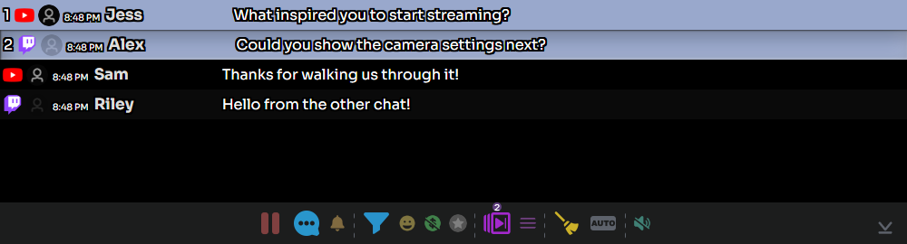

1. Open your operator Dock
Start with chat arriving in SSN. In the extension, open its popup; in the desktop app, open Sources and Settings. Open the generated Streaming Chat Dock link. Keep your source chats and SSN running.
Add the generated Featured Chat link to OBS as a Browser Source, using the same session and password. The Dock is your control window; Featured Chat is the audience view. See OBS quick start if those are not connected yet.
- Capture Your platform chats
- Operate Streaming Chat Dock
- Display Featured Chat in OBS
2. Feature and clear a message
- Click a chat message in the Dock. It should appear in the connected featured overlay.
- Click another message to replace it.
- Use the broom button, Clear the featured message (not this chat), to remove it from the overlay.
If you enabled Must manually select via context-menu, right-click and use Feature instead. Turn off auto-feature when you want to review each message before showing it.


3. Prepare your next questions
- Hold Ctrl while clicking messages to add them to the queue, or right-click a message and select Toggle Queue.
- Look for the queue count in the bottom toolbar. Use Show only the messages in queue to review your picks.
- Use Feature next message in queue to advance. Toggle Queue again to remove an unwanted queued message.
Pinning is separate: Alt-click or use the Pin context-menu action to keep a message in the Dock’s pinned area. Queuing prepares a sequence to feature.
4. Reply to the right chat
Right-click the viewer’s message and select Reply. Check the recipient and enter your response, then select SEND. The source must support replies and be signed in with permission to post.
The general speech-bubble toolbar button opens the send-message controls. Review its destinations before sending. A successful incoming capture does not prove outgoing replies work. For separate sender accounts, see Bot accounts for replies.
5. Manage a busy chat
| Control | Use it for |
|---|---|
| Pause / Play incoming chat | Pause the Dock display while reading; resume to process its buffered messages. This does not stop source capture or other overlays. |
| Filter | Find relevant messages; clear the filter to return to the full view. |
| Donations / Members filters | Temporarily narrow the displayed chat. Turn these off if normal messages seem missing. |
| Back to live / Scroll to bottom | Return to recent messages after reading older chat. |
Keep Exclude filtered messages from auto-selecting enabled if you use automatic featuring with filters. A viewing filter alone is not a moderation policy. See Moderation and filtering.
Before going live
Using test messages, feature one message, queue two more, advance once, and clear the overlay. If the Dock works but OBS stays blank, check the saved OBS URL, session/password, and that the featured Browser Source is loaded. See OBS troubleshooting.